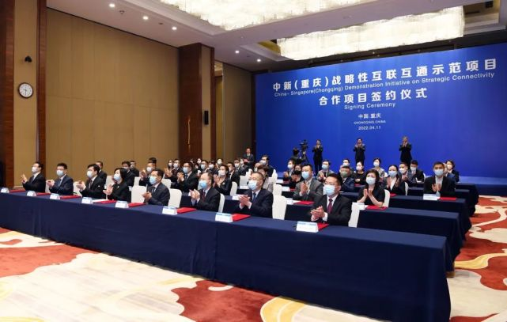
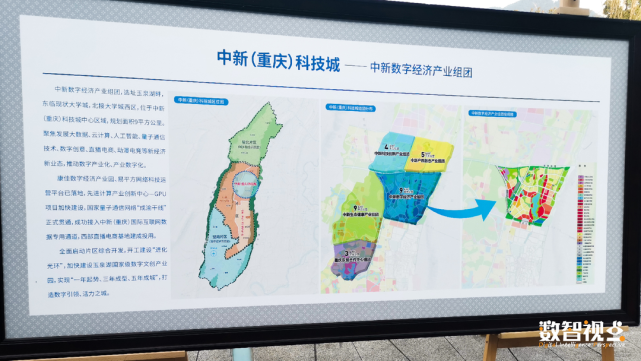
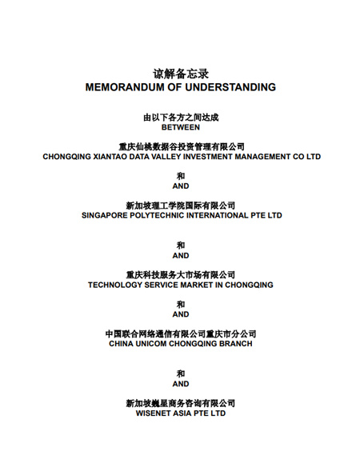
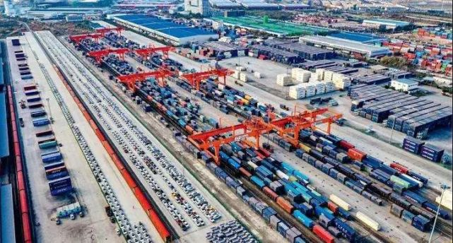
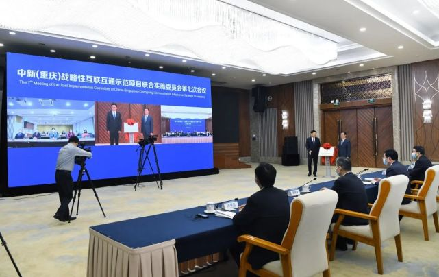
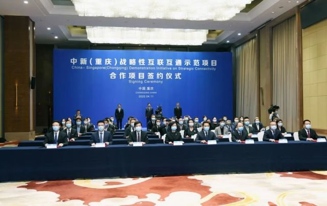

|
中新互联互通项目高层会议召开 大市场成功签署人才合作协议 |
4月11日，中新（重庆）战略性互联互通示范项目（简称“中新互联互通项目”）联合实施委员会第七次会议以线下线上方式召开，在重庆市委副书记、市长胡衡华，新加坡通讯及部长、内政部第二部长杨莉明的见证下，中新互联互通项目合作项目签约仪式成功举行。会议现场 现场签约合作项目30个，涉及信息通信、交通物流、金融、人才培养等多 个重点领域。其中政府间合作项目2个；商业合作项目20个，签约金额2.5亿美元；跨 境融资项目8个，签约金额15.7亿美元。 人才培养注入“新活水” 增强发展“原动力”人 才是新时代发展的第一资源，也是中新合作的重要智力支撑。 截至目前，中新（重庆 ）人才交流合作计划已取得系列成效：6批次156名公务人员、国有企业负责人赴新加 坡交流学习；新加坡国立大学重庆研究院落地两江新区；新加坡（重庆）青年人才驿 站项目被中组部评选为全国人才工作创新优秀案例。   签约现场  本次签约仪式上，重庆科技服务大市场有限公司、重庆仙桃数据谷投资管理有限 公司、新加坡理工学院国际有限公司（SPI）、中国联合网络通信有限公司重庆 分公司和新加坡巍星商务咨询有限公司五方共同签署中新人才合作谅解备忘录， 旨在推动SPI在渝及中国西部地区进行文凭、高管教育、职业培训等课程和企业实 习研究，协助SPI在渝设立新加坡理工学院考试中心，促进新加坡理工学院跨学科 学生与重庆企业在实习和就业合作链接；同时，利用中新（重庆）国际互联网数据 用通道等平台和信息化设施，推动重庆高职院校学生共同参与国际职业培训和实习 交流，促进中国重庆、新加坡在中新先进智能制造培训和人才流动性方面加强协作。 询和培训服务，中新国际贸易与供应链产业学院职业教育培训基地项目，先进智能制造 职业培训项目等也在有序推进中，将进一步夯实双向人才交流。 金融合作跑 出“加速度” 投资额占比超八成 新加坡是全球第四大金融中心，重庆正面向世界打造 内陆国际金融中心，近年来，“双枢纽”不断密切交流金融领域合作。此次共签约跨 个，签约金额15.7亿美元，金融领域合作跑出“加速度”。 图 在区域全面经济伙伴关 定（RCEP）新机遇下，合川、荣昌、南岸等区县将继续深化与新加坡合作，拟赴新交 行债券。利用搭建好的中新跨境融资通道，星展银行等金融机构将为华邦、英业达 业提供跨境贷款等金融服务。 交通物流按下“快进键” 双向贸易持续拓展 统计数据 显示，2021年铁海联运班列、国际铁路班列开行2123列，同比增长44%，跨境东盟班车 车次，同比增长17%，网络已覆盖106个国家、311个港口，国际陆海贸易新通道战略性 性、辐射性进一步增强。  如何借助该通道更好地把中国西部地区和东盟国家连接起来？此次签约项目涌现出了众多全新合作机 遇：双方将合作共建外贸综合服务平台、匈牙利综合物流基地，全方位服务双向贸易合作。并借此推动重 庆及西部茶产品、优质水果、特色食品等进入新加坡等东盟市场，促进双向贸易持续拓展。 信息通 信架起“友谊桥” 助推区域互联互通 全球疫情起伏反复，中新合作的脚步并未因此停滞，这主要得 益于双方在信息通信领域的互联互通。  2019年8月，中新（重庆）信息通信创新合作联盟成立。 基础上，此次双方拟签署《中新（重庆）战略性互联互通示范项目信息、通信及 媒体领域的合 作谅解备忘录》，推动数字经济合作及重点领域数字化转型，支持中新 企业（机构）利用新一代信息技术联合开展创新性项，推动中新数字经济合作。
领域探索“新蓝海”，开辟新的增长点。 农业方面，双方将抢抓碳达峰碳中和重大战略机 遇，共建中新低碳共生农业示范城、数字化绿色村镇项目，推动产业结构优化升级。 能源 方面，双方将共建中新（重庆）综合能源服务项目，对工业企业、公共建筑进行能源托管及 节能改造，推动实现节能目标。 商务方面，双方将在渝中区设立商务服务中心线下实体及 线上平台，协助重庆及西部省市企业赴新加坡及东南亚国家发展，助推重庆成为中国西部 与东盟国家贸易枢纽城市。 大健康方面，双方将结合重庆本土康养资源和新加坡医疗、康 养机构专业优势和先进管理模式，共建中新大健康营运中心。  城市规划方面，双方将在璧山启动中新（重庆）科技城项目产业发展研究及概念性总体规划项目。 |
 |